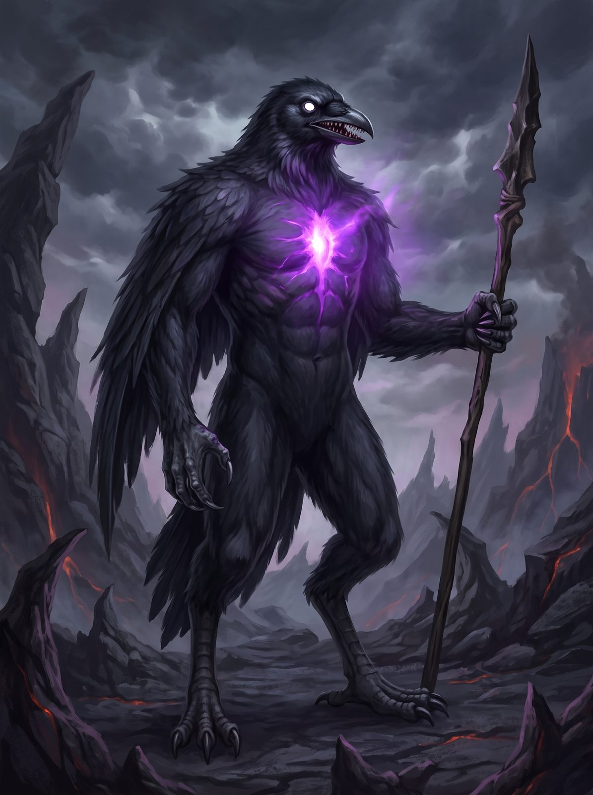

Xetus, the Raven Demon, is a summoned trader of forbidden spells. He is bound to Antonio, who gave him his name.


Character Sheet
| Name | Raven Demon |
|---|---|
| Type | Summoned Demon |
| Area | Summoned (Demonia) |
| Race | Demon |
| Sex | Male |
| Age | 0 |
| Height | 240 cm |
| Weight | 180 kg |
| SIZE | 6.0 |
Characteristics
- BODY: 3
- MIND: 2
- SPIRIT: 3
Attributes
BODY
- Strength: 4 (Total with BODY: 7)
- Endurance: 5 (Total with BODY: 8)
- Athletics: 2 (Total with BODY: 5)
- Melee Combat: 3 (Total with BODY: 6)
- Missile Combat: 2 (Total with BODY: 5)
MIND
- Nature Knowledge: 3 (Total with MIND: 5)
- Social Knowledge: 2 (Total with MIND: 4)
- Awareness: 5 (Total with MIND: 7)
- Willpower: 5 (Total with MIND: 7)
SPIRIT
- Casting: 5 (Total with SPIRIT: 8)
- Attunement: 5 (Total with SPIRIT: 8)
Key Skills (with Totals)
BODY → Strength
- Wield Weapon: 3 (Total: 10)
BODY → Endurance
- Fortitude: 7 (Total: 15)
- Poison Resistance: 7 (Total: 15)
BODY → Athletics
- Dodge: 5 (Total: 10)
- Hide: 0 (Total: 5)
- Move Quietly: 10 (Total: 15)
BODY → Melee Combat
- Bone Spear: 2 (Total: 8)
- Unarmed: 1 (Total: 7)
BODY → Missile Combat
- Dark Acid: 0 (Total: 5)
MIND → Nature Knowledge
- Magick Rituals: 8 (Total: 13)
MIND → Social Knowledge
- Legend Lore: 5 (Total: 9)
- Literacy: 3 (Total: 7)
- Spoken Language: 4 (Total: 8)
MIND → Awareness
- Alertness: 8 (Total: 15)
- Reaction Speed: 5 (Total: 12)
- Sense Magick: 8 (Total: 15)
MIND → Willpower
- Courage: 6 (Total: 13)
- Mental Fortitude: 6 (Total: 13)
- Pain Tolerance: 6 (Total: 13)
SPIRIT → Casting
- Area of Effect: 7 (Total: 15)
- Duration: 8 (Total: 16)
- Number of Targets: 6 (Total: 14)
- Range: 8 (Total: 16)
- Weight: 6 (Total: 14)
SPIRIT → Attunement
- Death: 9 (Total: 17)
- Mind: 7 (Total: 15)
- Self: 6 (Total: 14)
Combat & Equipment
- Body Points (BP): 17 (SIZE 6.0 × 2 + Fortitude/3)
- Damage Bonus (DB): 5 ((SIZE + Wield Weapon)/3)
- Magick Defense (MD): 9 ((Mental Fortitude + Attunement Self)/3)
- Armor: Soul Power (AP 10)
- Equipment: Bone spear, A purple glowing soul (AP 10)
Weapons
| Weapon | Skill | I/SR | Off | Def | Dam | HP | Range |
|---|---|---|---|---|---|---|---|
| Unarmed | 7 | 13 | 5 | 5 | 1 | - | - |
| Bone Spear | 8 | 19 | 8 | 12 | 4 | 7 | - |
| Dark Acid (spit) | 5 | 12 | 5 | - | 7 | - | 10m |
Spells
| Spell | Domain | DR | Cost | Casting time | Distance | Duration |
|---|---|---|---|---|---|---|
| Wings Of Darkness | Black | 16 | 1 round | 15 m | Instant |
GM Notes
Peaceful unless attacked or cheated in a trade. Prefers spells; the bone spear is a defensive last resort. The dark acid spit melts armour outright and does D6+7 BP (the table shows the net 7; armour does not apply). The soul grants AP 10, immunity to poison and disease, 1 BP recovered per hour, and regrowth of any lost limb within a day. Killing the body does not kill it: the soul persists and regenerates. Knows every black and forbidden spell at lore level 15.
Physical description
Xetus, The Raven Demon is a bird looking creature with black feathers, white glowing eyes and a small mouth filled with sharp teeth. It has a purple glowing soul inside the body.
Clothing
The Raven Demon is naked.
Occupations
The Raven Demon trades spells for goods. The Raven Demon's master is Antonio, and was given the name Xetus by him.
Mental Description
The Raven Demon is calm unless it is attacked or is given the wrong item in a trade.
Magick Trading
The Raven Demon must be summoned using the Raven Of Darkness ritual.
The Raven Demon understands what humans say, but speaks the language of Demonia.
The character can trade items for magick spells. Most of the spells are not learnable at Academia Magicka, such as Black Magick spells, Forbidden Spells or Polymorph. But The Raven Demon also knows some other types of spells.
The most powerful spells require items like a dragon shell, a wyvern egg or a cave lion head, while less powerful spells require items like topaz or a spider web. The game master decides what item is required for the trade. Once the trade is over the demon will disappear.
Combat
The Raven Demon is peaceful if he is not attacked. If a battle does start, the demon prefers to use spells, but has a bone spear to defend himself. The Raven Demon can also spit a dark acid that will melt down any armor and do D6+7 BP in damage.
The demon also has his own spell, Wings Of Darkness. When he casts it his wings start glowing and a black beam is unleashed at the target. The Raven Demon knows every black and forbidden spell with a lore of level 15.
The Soul And Special Powers
Inside the body of The Raven Demon is a purple glowing soul. The soul protects The Raven Demon with 10 armor points and immunity to poison and diseases. The Raven Demon recovers 1 BP per hour, and if a body part is lost it will grow back after a day.
When The Raven Demon is killed his soul will still exist and start regenerating his body. If you consume the soul you will learn Wings Of Darkness, and your soul will slowly fuse with his and you will slowly become evil. When you die with the soul inside, he will take over your body as a temporary body while his soul regenerates his former body.
If you decide not to consume the soul within one hour it will disappear and regenerate his old body after 5 months.